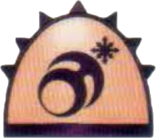

Shining Blades
| Shining Blades | |
|---|---|
 Heraldry of the Flawless Host, the former Shining Blades Artwork © Games Workshop | |
| Founding | Unrecorded |
| Progenitor | Unknown |
| Homeworld | Unrecorded |
| Fortress-monastery | Asteroid fortress (as the Flawless Host) |
| Chapter Master | Eleaxus the Flawless (Chaos Lord of the Flawless Host) |
| Allegiance | Slaanesh (renegade since 498.M34) |
| Colours | Pink, purple and black |
| Successor warbands | Lashdrum Monarchs, the Luscious Few, Villsid Skinsmen |
| Notable battles | |
| Berillia Massacres (498.M34), assault on the Crux Puritatis, Euthenia (310.M41), Makenna VII, Novaris (M42) | |
The Shining Blades were a loyal Space Marine Chapter of the Adeptus Astartes who were praised for the near-perfect purity of their gene-seed, together with the Red Scorpions and the Umbral Titans. Their record of victories convinced them that they could not fail. In the Berillia Massacres of 498.M34 their pride and the number of civilians killed in their campaigns led them to attack any who questioned them, and they became Heretic Astartes in the service of Slaanesh.[1]
They now call themselves the Flawless Host. They believe themselves the embodiment of justice and purity and the pinnacle of biological perfection, and have scarred the Imperium ever since as hedonistic servants of the Prince of Pleasure.[1]
History
[edit]The Berillia Massacres
[edit]Before their fall the Shining Blades had an unshakeable faith in their own abilities, a result of the rigid mental training their gene-seed's purity encouraged. Over a dozen campaigns in the 498–601.M34 period they won a string of victories that became known as the Berillia Massacres, for the very high number of civilians who died. When the Chapter's methods were questioned it attacked its allies. The Red Scorpions came unheralded to bring them to justice, and in the war that followed the Chapter's real allegiance was shown. They became servants of Slaanesh and declared themselves the Flawless Host, an act of hubris for which the Red Scorpions swore punishment.[1][a]
The Flawless Host
[edit]For a century the Host harried Loyalist Chapters, burned outposts and destroyed smaller detachments. It then seized the Red Scorpions strike cruiser Crux Puritatis as it returned from the Segmentum Tempestus and took the Chapter's dead to add to its stocks of uncorrupted gene-seed. The Red Scorpions' Lord High Commander Thay Kraun recalled all his combat units and searched the area. When the Host's asteroid fortress was found, he committed the whole Chapter to its destruction. The battle lasted six days, and the Red Scorpions retook the ship chamber by chamber. Kraun killed the Host's captain in single combat with the Blade of the Scorpion. The Host withdrew, vowing vengeance.[1]
Later wars
[edit]A combined force of the Host and the Night Lords assaulted the agri-world Euthenia XX in 310.M41. The Chaos Lord Eleaxus the Flawless had his fealty bought by the Word Bearers Warmaster Davroth with the promise of the luxuries of Makenna VII, and led three squads of Emperor's Children Terminators and Traitor Marines in Rhinos to take the world. In M42 the Silver Templars' new Chapter Master Akilios Zanaris found the people of Novaris enslaved by the Host. A quarter of the population died in a short war that ended when Captain Ducas killed the Host's leader Lyrius Soulslaver in a duel of more than a day. Novaris was given to the Silver Templars as their homeworld.[1][2]
Organisation and beliefs
[edit]The Host's successor warbands are the Lashdrum Monarchs, the Luscious Few and the Villsid Skinsmen. Its warriors wear pink, purple and black.[1]
Notable members
[edit]- Eleaxus the Flawless: Chaos Lord of the Host.
- Lyrius Soulslaver: leader killed at Novaris.
Timeline
[edit]| Date | Event |
|---|---|
| M34[b] | Shining Blades known for gene-seed purity |
| 498.M34 | Berillia Massacres begin; Chapter turns on its allies |
| 498–601.M34 | Red Scorpions bring the Chapter to justice; the Flawless Host is named |
| c. 598.M34[c] | Host seizes the Crux Puritatis after a century of raiding |
| c. 598.M34 | Red Scorpions destroy the Host's asteroid fortress in a six-day battle |
| 310.M41 | Assault on Euthenia XX with the Night Lords |
| M41 | Eleaxus serves Davroth at Makenna VII |
| 999.M41 | Great Rift opens |
| M42 | Liberation of Novaris by the Silver Templars |
See also
[edit]Notes
[edit]References
[edit]- ^ a b c d e f Codex Heretic Astartes - Chaos Space Marines (8th Edition), pg. 50. Games Workshop. Codex Heretic Astartes - Chaos Space Marines (8th Edition) (Revised Codex), pg. 50. Games Workshop.
- ^ Warhammer 40,000: Silver Templars (8th Edition), pg. 19. Games Workshop. Imperium Nihilus: Vigilus Ablaze (8th Edition), pg. 73. Games Workshop.